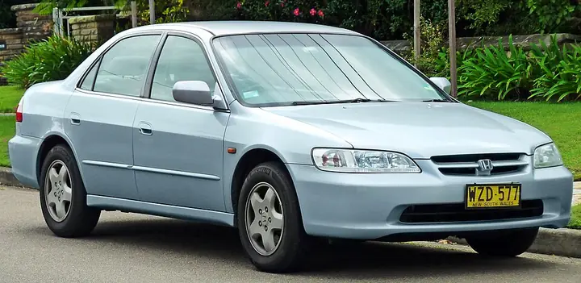
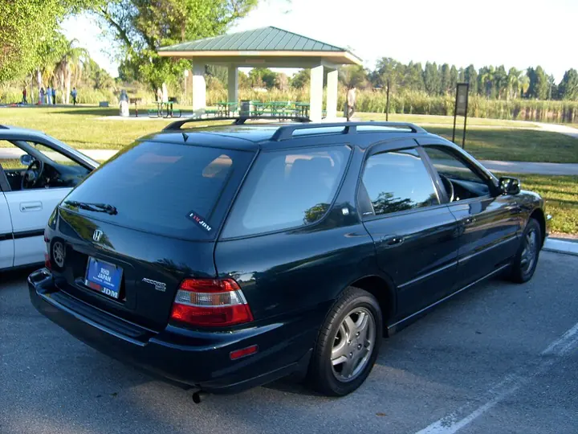
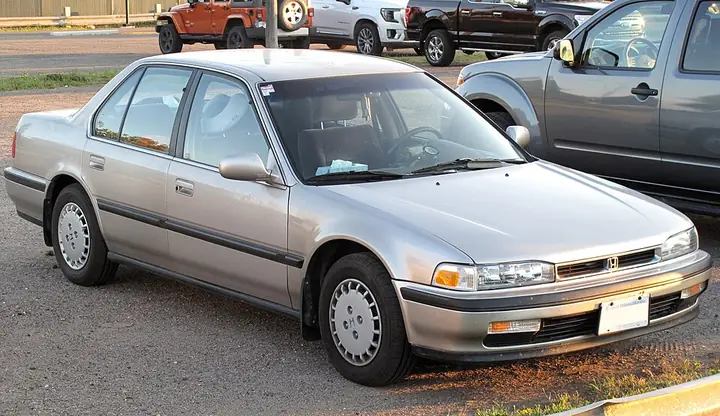
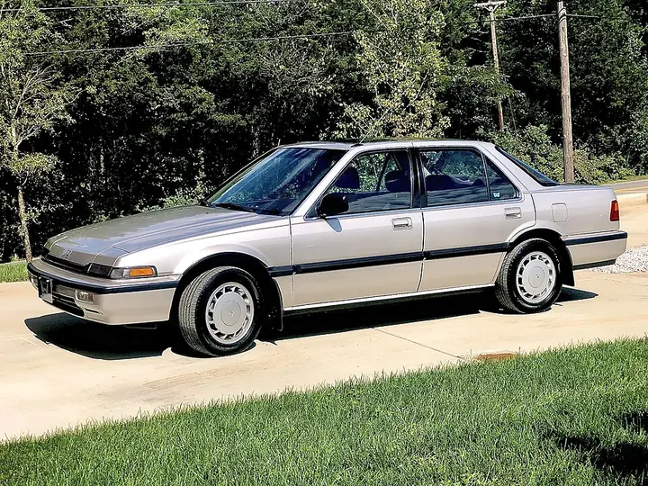
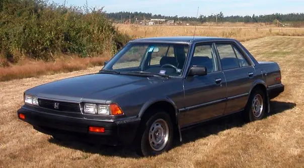
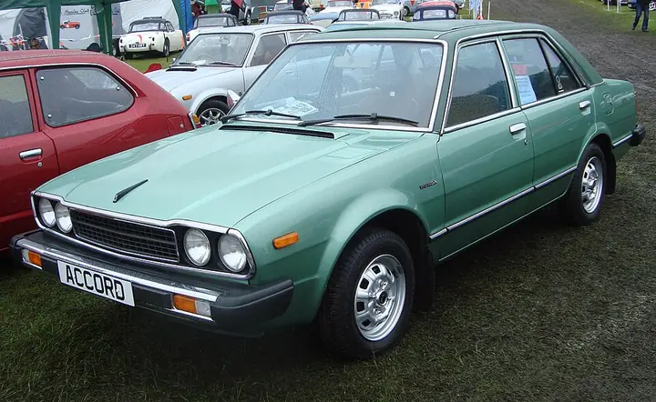

Honda Accord
Eleventh generation (2023) · 2023–present
Abstract
This generation of the Honda Accord is a mid-size car (D), built January 2023 – present in United States: Marysville, Ohio (Marysville Auto Plant), China: Guangzhou (GAC Honda); Wuhan (Dongfeng Honda, Inspire), Thailand: Prachinburi. Body styles: 4-door sedan. Designed by Takuya Miyazawa (2020).


1Specifications
| Production | January 2023 – present |
|---|---|
| Model years | 2023–present |
| Assembly | United States: Marysville, Ohio (Marysville Auto Plant)China: Guangzhou (GAC Honda); Wuhan (Dongfeng Honda, Inspire)Thailand: Prachinburi |
| Designer | Takuya Miyazawa (2020) |
| Class | Mid-size car (D) |
| Body style | 4-door sedan |
| Platform | Honda HA |
| Engine | Petrol:1.5 L L15BE turbo I4 (CY1)Petrol hybrid:2.0 L LFC5 I4 (CY2)Petrol plug-in hybrid:2.0 L LFB-19 I4 (CY3, China) |
| Transmission | CVT (1.5 L)e-CVT (hybrid) |
| Wheelbase | 2830 mm |
| Length | 4970 mm |
| Width | 1860 mm |
| Height | 1450 mm |
| Weight | 1580 kg (hybrid) |
| Also called | Honda Inspire (China; Dongfeng Honda) |
2Previous generations

_01.jpg){kind=link}
_01.jpg){kind=link}
.jpg){kind=link}

_01.jpg){kind=link}

_2.JPG){kind=link}







_(cropped).jpg){kind=link}
3Generation by generation
Length +12% from the first to the last
1976 19764,450 mm
1981 19814,410 mm
1985 19854,440 mm
1990 19894,694 mm
2017 20174,900 mm
2023 20234,970 mm
Weight +78% from the first to the last
1976 1976890 kg
1981 1981954 kg
1985 19851,096 kg
1990 19891,237 kg
2017 20171,420 kg
2023 20231,580 kg